Lab Overview
The purpose of this lab was to familiarize myself with working in an environment requiring Bluetooth communication with the device being programmed. Bluetooth was used for sending and receiving commands between the Artemis board and my laptop, which acted as the home base.
Materials
- RedBoard Artemis Nano
- USB-C to USB-C cable
- I ran all the lab sections below primarily on a M1 Macbook pro running the sequoia OS.
Lab 1A: Prelab and Setup
Objective
Configure the computer and Artemis board for BLE communication.
In this section the primary objective was to set up my laptop to have a working environment ready for programming the board.
Steps
- We first setup the Arduino board along with the Sparkfun Apollo3 board manager which allows us to program our Artemis board.
- I tested the board connectivity by running a few tests:
- Blink Test - Blink an LED onboard the Artemis Nano.
- Serial Communication - Tested the workings of the serial communication between the board and the computer by displaying messages echoed from the board onto the serial monitor.
- Temperature Sensor - Tested the onboard temperature sensor and output was as shown below (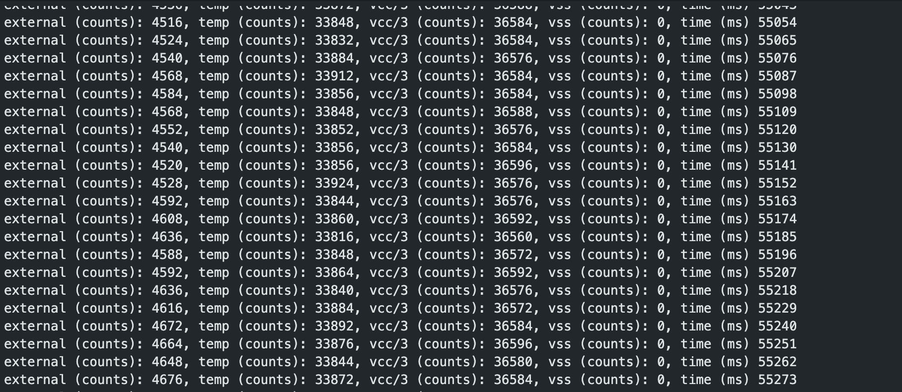).
- Microphone - By whistling and playing music, I manipulated the maximum frequency read by the onboard microphone and received the output as shown below.
Lab 1B: Bluetooth Communication
In this section of the lab, we configured Bluetooth communication between our artemis board and laptop which allowed us to send commands and receive data via Bluetooth.
Prelab
Here I primarily set up my environment to talk to the Artemis Nano board . This entailed a series of steps such as updating python and pip in my system and setting up a virtual environment in my arduino workspace.
MAC Address Retrieval
Retrieved and updated my Jupyter files to reflect the MAC address 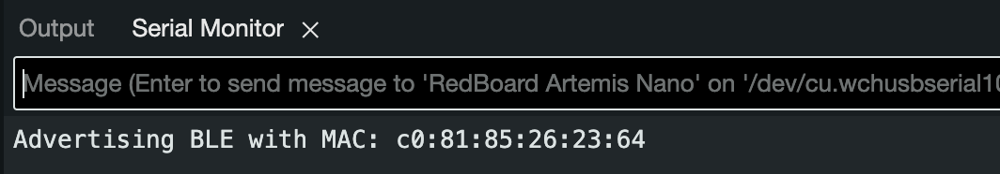.
Tasks
Task 1: ECHO
Here i had to simply send a string from a computer to the artemis board via the echo command. The code was simple as shown below.
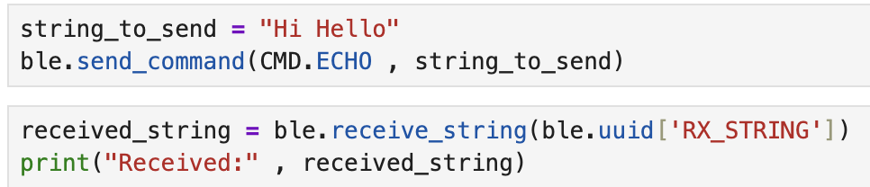On the arduino side however, I had to as well grab this string and send it back to the computer. It was just string manipulation and extraction as i have shown.
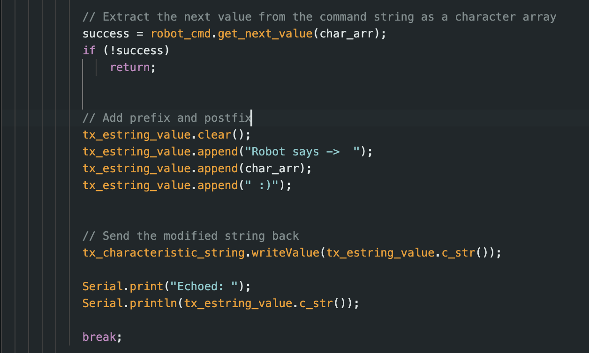I simply extracted the string received, pre appended the message “Robot Says” to the string and sent it back to the computer. The received message is as shown below.
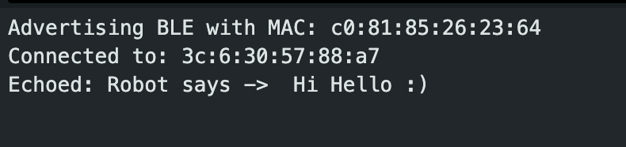Task 2: SEND_THREE_FLOATS
Here, the job was to send three floats values to the board and have the board display the values on its serial monitor. I basically extracted the three float values separated by a delimiter and printed them as show below.
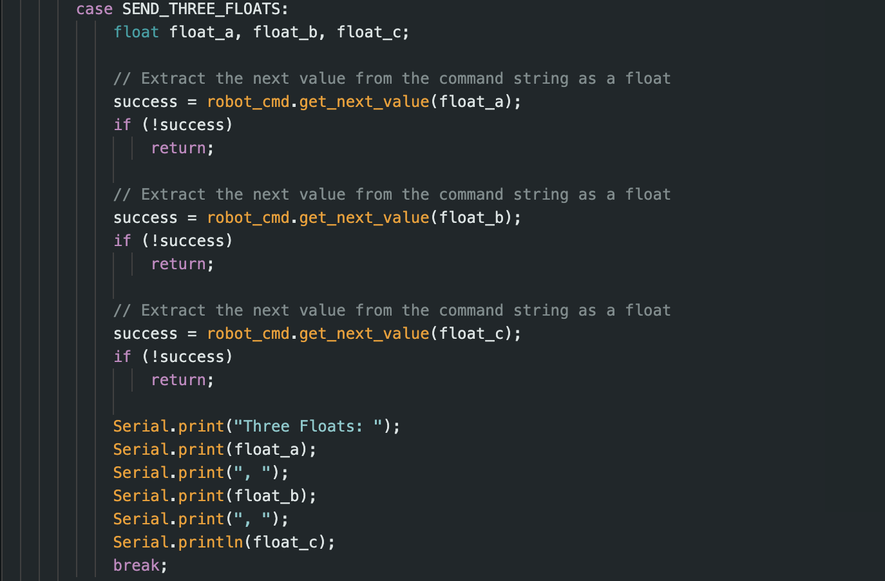The program then prints the extracted floats as shown below
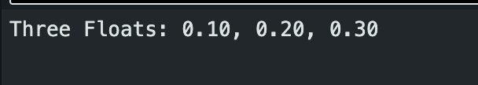Task 3: GET_TIME_MILLIS
I implemented a GET_TIME_MILLIS command that would in the future help me debug by providing the current time tracked by the board in milliseconds.
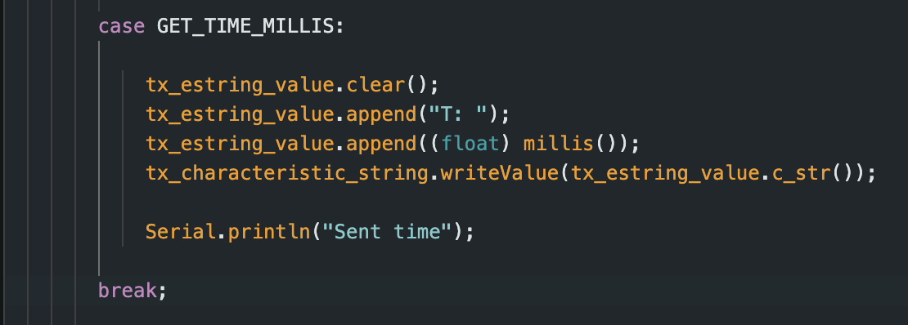As shown in the arduino c code above, I created a temporary buffer that stored the string of the current time in milliseconds. My computer then receives this data via bluetooth and renders it as shown below.
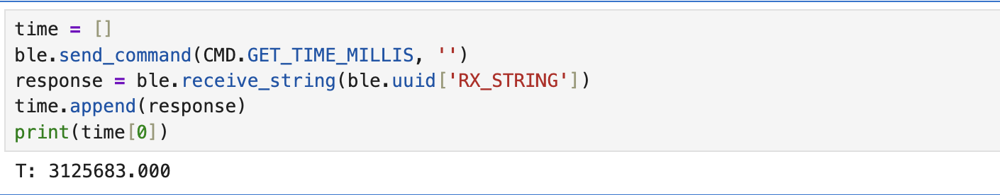Task 4: NOTIFICATION HANDLER
I implemented a notification handler whose primary job would be to alow me pass an argument to the start_notify() methods. Below is the simplified code for the job handler
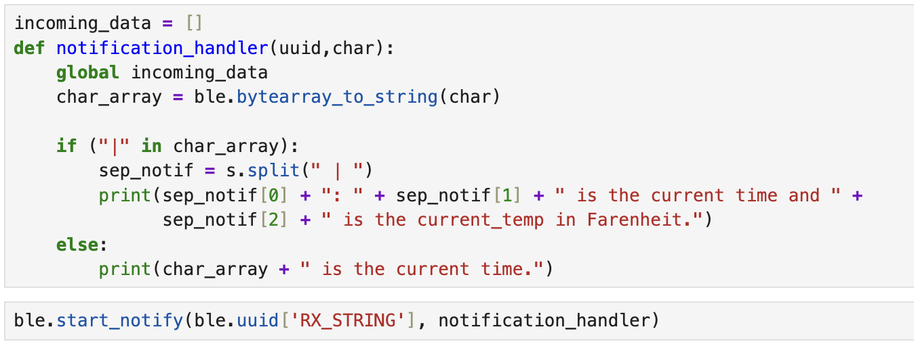Task 5: GET_TIME
I included a time loop command that would essentially acquire an individual time value from the arduino and send it back to the computer. The logic was the same as that of the GET_TIME_MILLIS command
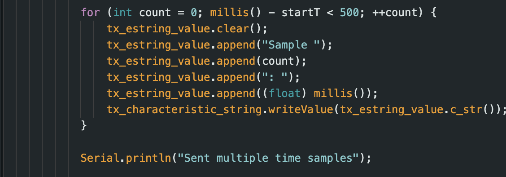we can see the effective data transfer rate is: calculated value
Task 6: TIME ARRAY
Next was figuring a way to collect and send the time data. I used an array of size 500 to collect all of the time data and transmit this at once instead of collecting and then transmittign each data time all over.
I used the same for loop structure for sending the array data.
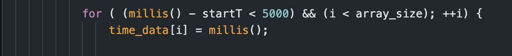Task 7: GET_TEMP_READINGS
This was a combination of the the TIME_LOOP and SEND_TIME_DATA as well as Analog Read that I initially worked with in the beginning of the prelab.
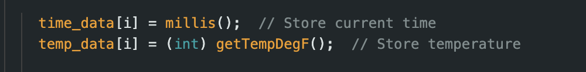 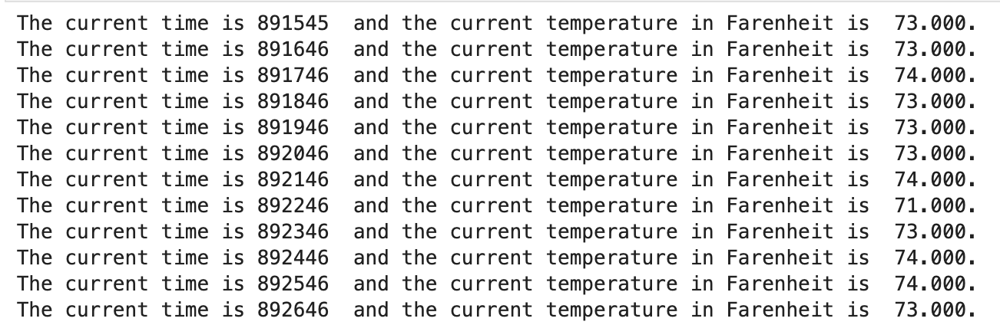Task 8: Discussion of the Two Methods
In Task 5, we transmit individual data points, while in Task 6, we transmit the entirety of the whole sample group. The Task 6 method definitely has a higher sampling rate than Task 5 because we use two data arrays, which we populate before transmitting. In contrast, for Task 5, we transmit the time data as individual points.
However, the method in Task 6 might require additional memory due to the size of the two arrays used to store the time and temperature data.
Assuming each sample is approximately 4 bytes, we can estimate the sample size for method 6 to be around 96,000 samples:
\[ \frac{384 \text{kb}}{4 \text{B}} = 96,000 \]
However, this estimation assumes that the board uses all of its memory to store the time and temperature data.Conclusion
After testing direct data transmission versus array-based logging on the Artemis board, I noticed some clear trade-offs. With direct transmission, I could send one message every 60 milliseconds, but logging data in an array massively sped up collection—so fast that timestamps started repeating due to sampling every ~1 millisecond. This confirmed that buffering data in RAM allows much higher sampling rates.
The trade-off, of course, is memory and pushing high rates too long could max out the Artemis’s 384 KB of RAM. For simple, low-frequency tasks, direct transmission works fine, but for anything time-sensitive, like high-speed sensor data, buffering in an array is the way to go—despite the memory constraints.
One big issue I ran into was compatibility with macOS Sequoia. For some reason, it messed up communication with the Artemis board, and the only fix was rolling my OS back to macOS Sonoma. That instantly solved the problem and let me move forward with the lab, which was a solid reminder that software-hardware compatibility is a real thing in embedded systems.
In the end, it’s all about balancing speed and memory. If I need fast data capture, I’d go with array buffering but keep a close eye on memory usage to prevent overflows. And beyond just the code, making sure my development setup is stable is just as important for smooth testing and debugging.